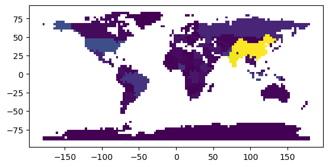

Example - Raster DataArray to GeoDataFrame (vectorize)
[1]:
import geopandas
from geocube.api.core import make_geocube
from geocube.vector import vectorize
%matplotlib inline
Generate Raster DataArray
[2]:
gdf = geopandas.read_file(geopandas.datasets.get_path('naturalearth_lowres'))
geo_grid = make_geocube(
vector_data=gdf,
measurements=['pop_est'],
resolution=(-3.0, 3.0),
)
geo_grid["pop_est"].plot()
[2]:
<matplotlib.collections.QuadMesh at 0x7fd708913f40>

Convert to GeoDataFrame (vectorize)
[3]:
grid_gdf = vectorize(geo_grid.pop_est.astype("float32"))
grid_gdf.plot(column="pop_est")
[3]:
<AxesSubplot: >
